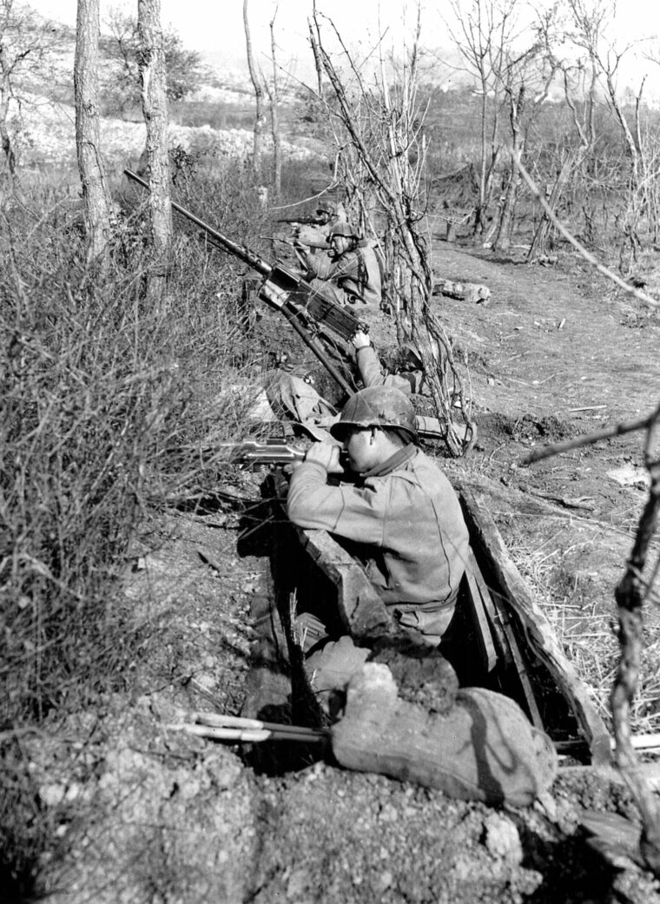
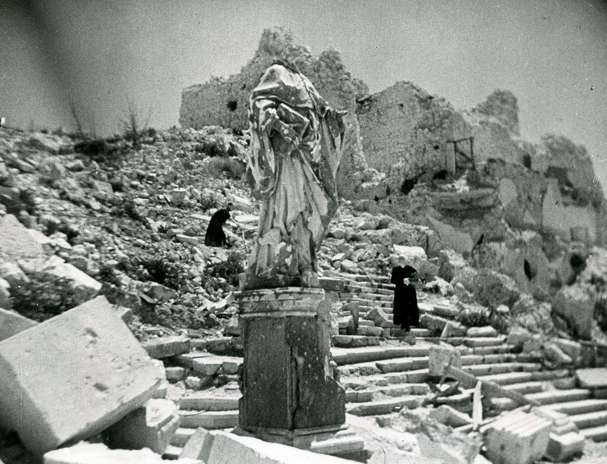
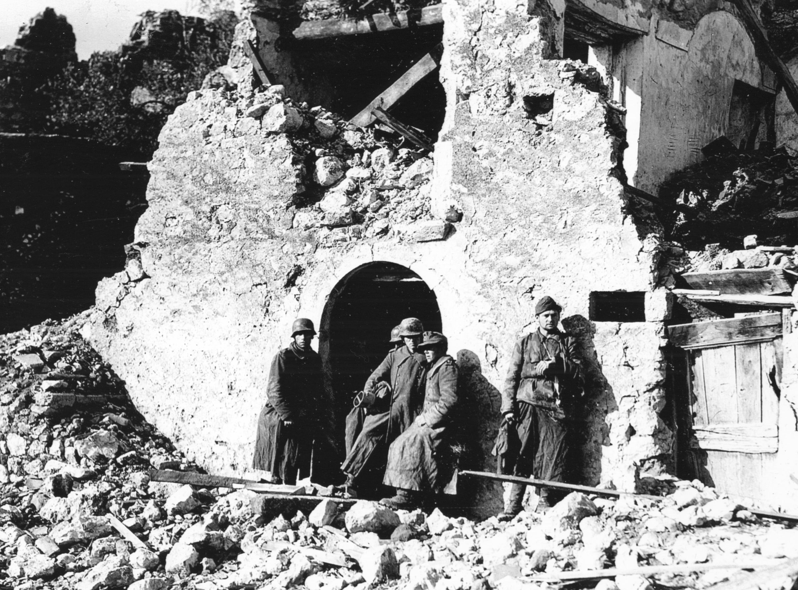

The Battle of Monte Cassino: Breaking the Impenetrable Gustav Line
As Allied forces pushed up the mountainous Italian peninsula in early 1944, their advance ground to a bloody halt against the Gustav Line—a formidable belt of German defensive fortifications anchored by the historic Benedictine abbey atop Monte Cassino, which commanded every approach toward Rome.

The Mountain Fortress
Perched high on a rocky precipice overlooking the Liri Valley, the ancient monastery provided German artillery spotters with an unassailable panoramic view of Allied movements. Month after month, repeated assaults by American, British, French, Indian, and New Zealand divisions smashed against the rocky slopes under devastating machine-gun and mortar fire.

The Controversial Bombing and Final Breakthrough
Convinced the abbey was being used as a military stronghold, Allied commanders authorized a controversial heavy aerial bombardment in February 1944 that reduced the historic structure to ruins—though paradoxically providing German defenders with even better defensive rubble to fight from. Finally, in May 1944, a multinational offensive spearheaded by Polish and Free French mountain troops outflanked the fortress, opening the road for the eventual liberation of Rome.
